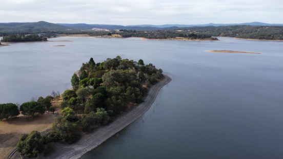
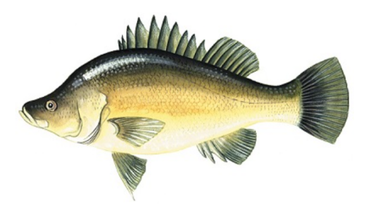

Sugarloaf Reservoir
 Welcome to Sugarloaf ReservoirSugarloaf Reservoir is a scenic man-made lake located in Christmas Hills, approximately 35 kilometers northeast of Melbourne. Serving as a crucial component of Melbourne's water supply, the reservoir is surrounded by Sugarloaf Reservoir Park, which offers visitors opportunities for bushwalking, picnicking, birdwatching, and sightseeing. The park features several walking trails, including the Ironbark, Chris Phillips, and Sugarloaf Walking Tracks, providing panoramic views of the reservoir and its natural surroundings.
Fishing at Sugarloaf Reservoir
Fishing at Sugarloaf Reservoir is permitted from the shoreline in specifically designated areas during park hours. Anglers can target species such as rainbow trout, redfin,Golden perch and European carp. However, to protect the water quality, the use of natural bait, berley, and wading into the water are strictly prohibited; only artificial lures are allowed. Additionally, boating and kayaking are not permitted, with the exception of sailing activities organized by the local sailing club. Visitors must hold a valid Victorian recreational fishing licence and adhere to all local fishing regulations.
The fish species commonly found in Sugarloaf reservoir include:
Redfin Perch: A popular target species, especially in the cooler months. Never forget a point, here is lure fishing only hand-tied fly hooks can often yield surprisingly effective results.
Rainbow Trout: Occasionally found in cooler stretches, especially closer to tributaries like the Plenty River.Never forget a point, here is lure fishing only

Golden Perch:also known as "yellowbelly," is a popular native freshwater sportfish found in Australia’s inland rivers and reservoirs. Known for its powerful fight, it prefers warm, slow-moving waters with structures like submerged logs. Golden perch readily take lures and live bait(not here), and are commonly targeted in places like the Murray River and stocked lakes across Victoria.The best way to catch them is by using soft plastics that mimic their natural prey, such as small baitfish, or by using crankbaits and spoons that imitate slightly larger fish invading their territory.
Common Carp: Although introduced and considered a pest, they are abundant and put up a strong fight, making them appealing to some recreational fishers.Victoria has strict regulations regarding carp fishing. Due to the severe environmental damage carp cause to local waterways, all carp caught must not be returned to the water.Carp are omnivorous fish and can be caught with almost any type of bait. Naturally, non-artificial baits tend to be significantly more effective than lures. This principle generally applies across all types of waterways.

Fishing in this area is more about enjoying the serenity of the bushland and spotting wildlife than sheer volume of catches. Best results often come during early morning or late afternoon, particularly in spring and autumn. Local regulations require a Victorian Recreational Fishing Licence, and catch limits must be followed.